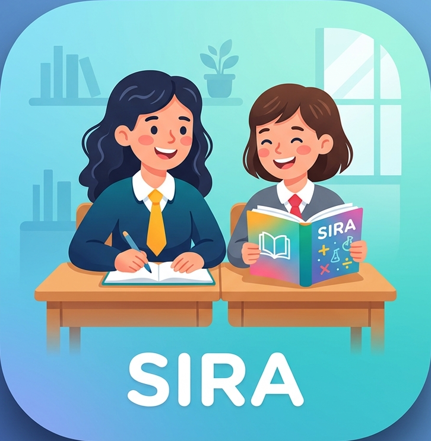

Sınıf Mevcudu
Öğrenci listesini yönetin veya devamsızlık durumunu işaretleyin:
| No | Ad Soyad | Cinsiyet | Oylama Durumu | Gelmedi (Devamsız) | İşlem |
|---|

Sosyal İlişki ve Refah Algoritması
Listeden kendi adını bulup üzerine dokun.
Birlikte oturmak istediğin en fazla 5 arkadaşını tercih sırasına göre seç.
Teşekkürler . Tercihlerin başarıyla kaydedildi.
3 saniye içinde ana ekrana dönülüyor...
Öğrenci listesini yönetin veya devamsızlık durumunu işaretleyin:
| No | Ad Soyad | Cinsiyet | Oylama Durumu | Gelmedi (Devamsız) | İşlem |
|---|
| Sıra | 1. Öğrenci | 2. Öğrenci | Ö1 Tercih | Ö2 Tercih |
|---|
Sıradaki konuşma ve uyumsuzluk durumuna göre uygulanacak deprem seviyesini seçiniz: